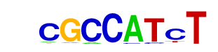
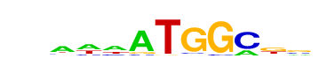
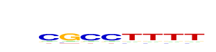

| p-value: | 1e-130 |
| log p-value: | -3.000e+02 |
| Information Content per bp: | 1.617 |
| Number of Target Sequences with motif | 904.0 |
| Percentage of Target Sequences with motif | 5.92% |
| Number of Background Sequences with motif | 792.0 |
| Percentage of Background Sequences with motif | 2.37% |
| Average Position of motif in Targets | 38.6 +/- 24.1bp |
| Average Position of motif in Background | 49.4 +/- 28.3bp |
| Strand Bias (log2 ratio + to - strand density) | 1.0 |
| Multiplicity (# of sites on avg that occur together) | 1.03 |
| Motif File: | file (matrix) reverse opposite |
| Rank | Match Score | Redundant Motif | P-value | log P-value | % of Targets | % of Background | Motif file |
| 1 | 0.918 | 1e-122 | -282.375172 | 4.20% | 1.42% | motif file (matrix) | |
| 2 | 0.755 | 1e-103 | -238.106564 | 4.25% | 1.60% | motif file (matrix) | |
| 3 | 0.933 |  | 1e-100 | -231.740242 | 8.12% | 4.23% | motif file (matrix) |
| 4 | 0.730 |  | 1e-84 | -195.150711 | 3.37% | 1.25% | motif file (matrix) |
| 5 | 0.783 | 1e-82 | -189.519916 | 4.32% | 1.86% | motif file (matrix) | |
| 6 | 0.716 | 1e-52 | -120.552915 | 7.23% | 4.45% | motif file (matrix) | |
| 7 | 0.698 | 1e-39 | -91.641624 | 11.66% | 8.51% | motif file (matrix) | |
| 8 | 0.610 | 1e-23 | -54.892971 | 3.68% | 2.34% | motif file (matrix) | |
| 9 | 0.653 | 1e-23 | -54.029420 | 1.03% | 0.41% | motif file (matrix) | |
| 10 | 0.646 |  | 1e-22 | -50.746497 | 1.07% | 0.45% | motif file (matrix) |